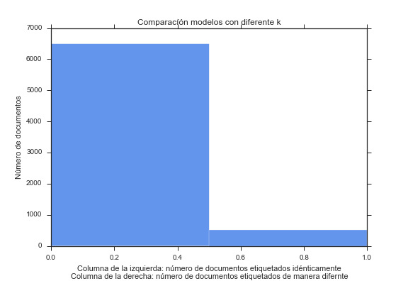
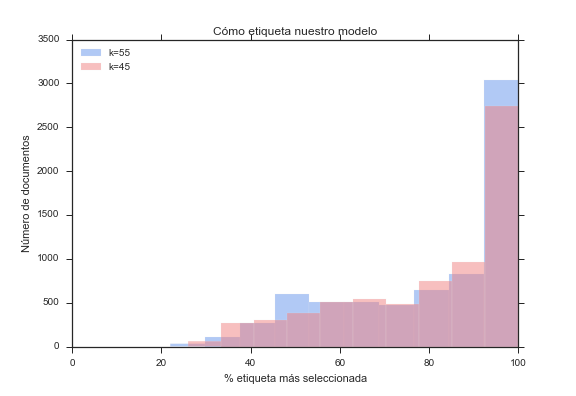
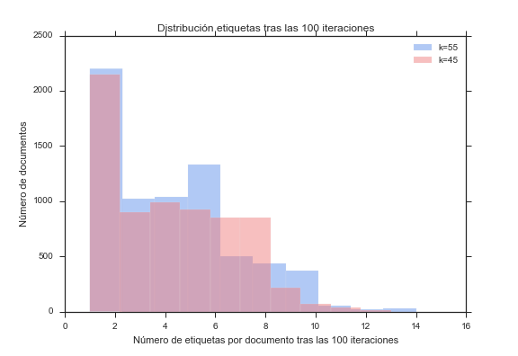

Políticos vs Ciudadanos
¿Hablamos de lo mismo?
El proceso:¿Cómo lo hemos hecho?
¿Cómo funciona el Barómetro del CIS?
Cada mes 2.500 españoles mayores de edad son seleccionados de forma aleatória proporcional teniendo en cuenta otras variables como sexo, edad, población o hábitat. Los seleccionados son entrevistados por los agentes del CIS personalmente en su casa. Es a partir de estas encuestas de donde se obtienen la información para los barómetros (más información sobre el método).
Estos estudios contienen un bloque de preguntas fijas y otro variable que está orientado a un tema de interés político o social según la ocasión. Dentro de este grupo de preguntas fijas nos centramos en las siguientes preguntas:
- ¿Cuál es, a su juicio, el principal problema que existe actualmente en España?¿Y el segundo?¿Y el tercero?(RESPUESTA ESPONTÁNEA)
- Desde mar'06
- ¿Cuáles son, a su juicio, los tres problemas principales que existen actualmente en España?(MÁXIMO TRES RESPUESTAS)
- Desde sep'00 a feb'06
Estas nos dan información sobre los 3 principales problemas que percibe la población española y son las que utilizaremos para saber que le preocupa.
Podemos consultar los resultados de los barómetros a lo largo del tiempo en el banco de datos.
¿Cómo funcionan las Sesiones de Control al Gobierno en el Congreso de los Diputados?
Dentro de los diferentes tipos de sesiones que se realizan en el Congreso elegimos las sesiones de control al gobierno, que se celebran actualmente los miércoles. Aunque estas no están definidas en la constitución ni por los reglamentos parlamentarios, se han consolidado con la práctica debido a que es en estas donde los diferentes partidos políticos explican sus inquietudes respecto a nuevas legislaciones o problemas a solucionar y el presidente del gobierno, junto con sus diferentes ministros, debe dar respuesta a ellas.
Los diarios de estas sesiones los encontramos en la web del congreso, 100% accesibles desde un buscador.
Podemos encontrar información sobre su funcionamiento en el siguiente documento:
"[...] Una sesión plenaria ordinaria dedica por regla general un mínimo de dos horas a debatir preguntas e interpelaciones. Estas sesiones de control se llevan a cabo los martes por la tarde en el Senado y los miércoles por la mañana en el Congreso.
En primer lugar se debaten las preguntas y, a continuación, las interpelaciones. La respuesta del Gobierno a estas últimas da lugar a una iniciativa del grupo interpelante que recoge las conclusiones de ese debate con el Ejecutivo y las convierte en propuestas (moción consecuencia de interpelación). Estas se debaten en la siguiente sesión plenaria. [...]"
Source: Asociación de Periodistas Parlamentarios
Scraping y Cleaning de los datos
El Scraping es el proceso por el cual extraemos los datos de una página web. En este caso hemos procesado los barómetros del CIS utilizando su banco de datos y los diarios del Congreso a través de su buscador.
Para esta parte del proceso han sido necesarios los paquetes: Selenium y BeautifulSoup.
CIS
Los barómetros del CIS se realizan cada mes. Hemos seleccionado el período comprendido entre septiembre de 2000 y febrero de 2015, ya que podemos encontrar las preguntas que buscamos cada mes, excepto en agosto y excepcionalmente de octubre de 2001 (después de 11S).
En primer lugar, realizamos una aproximación utilizando Selenium para saber cuántos barómetros teníamos disponibles con la información que necesitabamos. Fue aquí donde descubrimos que no teníamos una respuesta de forma regular hasta septiembre de 2000.
Una vez que nos dimos cuenta de esto, descargamos el contenido de todos los barómetros con Selenium y a través de expresiones regulares con BeautifulSoup creamos una base de datos con los resultados que hemos guardado en MongoDB.
Como respuesta a cada pregunta tenemos 30 temas diferentes cada mes, lo que significa que durante todo el período encontramos 150 temas diferentes. La mayoría de los cuales eran similares o conexos por lo que decidimos agruparlos por clusters. Obtuvimos 14 clusters claramente identificados: Educación, Salud, Corrupción, Medio Ambiente, Servicios Públicos, Ideología, Economía, Empleo, Juventud, Justicia, Social, Terrorismo, Vivienda, Seguridad Pública y otros.
Vamos a encontrar más temas o clusters en los debates del Congreso, pero nunca pensamos que la relación de los temas que iba a ser bidireccional.
Congreso de los Diputados
La página web del Congreso se genera dinámicamente. Para obtener la lista y descargar los diarios de sesiones utilizamos herramientas de Selenium y BeautifulSoap.
De todos los diarios disponibles entre septiembre de 2000 y marzo de 2015 hemos descargado las sesiones de control, es decir las que se realizan los miércoles y tengan una sección para preguntas en su orden del día.
A la hora de analizar el número de diarios de sesiones obtenidos, hay que tener en cuenta que en los meses tradicionalmente vacacionales (enero, julio y agosto) no suele haber sesión de control al gobierno. Tampoco se celebra sesión de control en los periodos electorales. De esta manera, en los cambios de legislatura encontramos periodos de cuatro meses sin sesiones de control:
- Enero-abril de 2004 (cambio de legislatura: desde VII a VIII)
- Enero-abril de 2008 (cambio de legislatura: desde VIII a IX)
- Octubre-diciembre de 2011 y enero de 2012 (cambio de legislatura: de IX a X)
Después de descargar todas las sesiones disponibles obtuvimos 311 documentos.
Estructura de los diarios de sesiones
Una vez obtenidos los diarios, se procedió al análisis de la estructura de los mismos. Este proceso nos permitió extraer la información que queríamos: preguntas, respuestas, miembros y grupos parlamentarios realizar en la sesión.
El contenido de las sesiones de diario es un debate en torno a una pregunta o problema previamente registrada una semana antes del control plenaria:
"[...] El orden del día de una sesión de control al Gobierno en el Congreso cierra a las 20:00 de la semana anterior, aunque una resolución Presidencial de junio de 1996 abrió la posibilidad de reemplazarlo hasta el mediodía del lunes por cuestiones relativas a las resoluciones adoptadas por el Consejo del Ministro o particularmente temas de actualidad. [...] "
Fuente: Asociación de Periodistas Parlamentarios .
De esta manera, cada pregunta o problema tiene un número de archivo que la identifica. Todos los discursos se registran, literalmente, en el Diario de sesiones donde se señala el grupo diputado o parlamentario que lo hizo como podemos ver en este diario del 25 de marzo 2015:

En adelante, definiremos un documento como una pregunta o interpelación y las intervenciones (respuestas) que generó y la información adicional: fecha del diario de sesiones al que pertenece, qué diputado o grupo realizó la pregunta, el número de expediente de la pregunta, y los diputados que realizaron cada una de las intervenciones.
Para identificar a los miembros del Congreso de los discursos y a que grupos parlamentarios pertenecen fue necesario obtener la información de la página web del Congreso. Se utilizaron de nuevo Selenium y BeautifulSoap para descargar las listas de diputados, grupos parlamentarios y las legislaturas de los períodos que estábamos analizando.
Listas de diputados
Diputados es la sección de la página web del Congreso en la que podemos encontrar la lista de diputados por legislatura. Por ejemplo: listado de diputados de la X Legislatura y su grupo parlamentario .

En total, obtuvimos una lista de 1.374 miembros en nuestro periodo.
Lista de grupos parlamentarios
En cuanto a los Grupos Grupos podemos encontrar una lista de grupos parlamentarios de cada legislatura, como podemos ver en: listado de los grupos parlamentarios de la X Legislatura.

En total contamos con una lista de 16 grupos parlamentarios a lo largo del período. Cada diputado está vinculado a un grupo durante cada legislatura, ya que es posible tener los cambios en la composición de los grupos a lo largo de estas.
Lista de Legislaturas
Dentro de miembros podemos encontrar El congreso desde 1977 a 2011, donde hallamos una lista de las legislaturas y sus períodos: List of Legislatures.

Una vez que tenemos todas las listas las almacenamos en MongoDB para utilizarlo posteriormente en el proceso de extracción.
Extracción de preguntas e intervenciones
Mediante el uso de expresiones regulares somos capaces de analizar línea por línea el contenido de un diario de sesiones y detectar el principio o final de las preguntas o aportaciones, diputados, grupos, ...
Comenzamos el proceso de extracción, cuando nos encontramos con el inicio de las preguntas, dejando de lado otras secciones del diario que no pertenece a las preguntas de las sesiones de control como "PROPOSICIONES NO DE LEY", "CONVALIDACIÓN O DEROGACIÓN DE REALES DECRETOS-LEYES", "JURAMENTO O PROMESA DE ACATAMIENTO DE LA CONSTITUCIÓN", etc.
Análisis de preguntas
Una pregunta en una sesión de control tiene la siguiente estructura:
["DEL DIPUTADO", "DE LA DIPUTADA", "DEL GRUPO PARLAMENTARIO", "DE DOÑA"] + [name and surname of the deputy] + [parliamentary group] + ["SOBRE", "RELATIVA A", ... ,":",","] + [question text] + [file number]

Para determinar el diputado y el grupo de cada pregunta comprobamos la correspondencia del [nombre diputado] con la lista de diputados y el [grupo político] en la lista de grupos.
Como que la lista de de diputados en la base de datos está en el formato: [[apellido], [nombre]] ha sido necesario un algoritmo para la transformación de nombres y apellidos en este formato:
[Alberto Ruiz-Gallardón Jiménez] → [RUIZ-GALLARDÓN JIMÉNEZ], [ALBERTO]
[Jaime Rodríguez-Arana Muñoz] → [RODRÍGUEZ-ARANA MUÑOZ], [JAIME]
Entrenamos el proceso con toda la lista de diputados.
El análisis de las intervenciones
Las intervenciones se adhieren a una de las siguientes estructuras en los diarios:
- ["El señor", "La señora",...] + [apellido del diputado] + [":"] + [intervención]
- ["El señor", "La señora",...] + [posición en el gobierno] + ([apellido del diputado]) + [":"] + [intervención]

Una vez que detectado realizamos el mismo proceso que hemos visto anteriormente para determinar el diputado, el grupo y la legislatura.
Observaciones
Las intervenciones del moderador o el Presidente de los debates del Congreso se han eliminado ya que no proporcionan ningún contenido interesante para nosotros. Diferentes elementos pueden actuar como punto de partida de una pregunta o discusión. Es por eso que hemos recopilado los diccionarios de elementos (caracteres, n-gramas de palabras) que han sido entrenados con los documentos recogidos: Iniciadores de preguntas: ["DEL DIPUTADO", "DE LA DIPUTADA", "DEL GRUPO PARLAMENTARIO", "DE DOÑA", ...]
Conectores de pregunta: ["SOBRE", "RELATIVA A", ... ,":",","]
Iniciadores de intervención: ["El señor", "La señora",...]En el proceso de identificación de los diputados y los grupos parlamentarios contra nuestra base de datos hemos aplicado de String Metrics para saltarnos los errores de transcripción frecuentes en los diarios como estos:
"DE LADIPUTADADOÑALEIRE PAJÍN IRAOLA..." → "LEIRE PAJÍN IRAOLA"
"... GRUPO PARLAMENTARIO FEDERAL DE IZQUIEDA UNIDA..." → "GIU" (Grupo Izquierda Unida)
Finalmente, como resultado del proceso de extracción de preguntas e intervenciones se han registrado 7000 documentos en la base de datos.
Ejemplos
A continuación se muestran un par de ejemplos en los que se puede ver el texto extraído en el proceso de análisis (pintando el fondo del texto en función del grupo al que pertenece el diputado que realiza la intervención: azul, Grupo Popular; rojo, Grupo Socialista; gris, Grupo Mixto, ...):


Y, por último, un ejemplo de diario de sesión de control (HTML) marcado después de pasar por el proceso de análisis (al pasar el cursor sobre una pregunta o intervención se muestra un tooltip con parte de la información obtenida en el proceso de análisis):
Test
Para detectar los errores en el proceso de extracción se han llevado a cabo tests que analizan los resultados después de la extracción.
Por un lado, se ha puesto en marcha un proceso que pone de relieve los documentos originales (HTML) con colores seleccionando los extractos (con cada grupo parlamentario tiene un color asignado). Hemos visto algunos ejemplos en las imágenes anteriores. El resultado nos permite comprobar visualmente los textos. En este sentido, los gráficos Líneas Políticas y ¿Qué dicen? También nos permiten validar la consistencia de los datos.
Dado el elevado número de diarios de control de sesiones descargados, no es viable utilizar una revisión visual. Por lo tanto, se ha desarrollado una prueba que analiza la coherencia de la información extraída en busca de posibles errores: preguntas vacías, preguntas sin respuesta, preguntas con demasiadas discusiones, intervenciones vacías, preguntas o debates donde no se detecta el diputado o grupo parlamentario que realiza la intervención ...
¿Cómo se obtienen las palabras clave de cada intervención?
Extracción de las características y clusterización del texto
El problema
Después de hacer scraping de la página web del Congreso y del CIS, nuestro siguiente objetivo era encontrar la manera de conectarlos. Queríamos construir un puente entre los principales temas procedentes de los documentos del Congreso y los temas principales de la página web del CIS.
Hay muchas maneras de hacer frente a este problema. Tras probar algunas de ellas, finalmente, se optó por extraer los temas de los documentos del Congreso y construir un modelo usando el algoritmo k-means con el fin de etiquetar estos documentos utilizando los temas principales del CIS (con todos los que nos fuera posible!). Así creamos, de alguna manera, un diccionario entre el Congreso y principales temas del CIS. El siguiente paso fue establecer un tipo de métrica con el fin de poder comparar estos dos mundos.
En los párrafos siguientes, explicaremos cómo nos enfrentamos a este problema paso a paso.
Definiendo las "características"
Como estábamos interesados en la extracción de los principales temas de nuestro Corpus, definimos como característica cualquier palabra clave n-grama (secuencia de una o más palabras) en el Corpus.
Decidimos que sería útil para nuestro propósito dividir el Corpus en pedazos más pequeños para reducir el número de temas por documento. Un pedazo consistirá en un sola "pregunta" y sus "intervenciones". Esto es a lo que llamaremos "documento" en los párrafos siguientes.
Nos dimos cuenta de que los conceptos, en general, son expresados por nombres, con o sin adjetivos, por lo que nos hemos centrado en encontrar la manera de extraer los sustantivos y adjetivos de nuestros documentos.
Cómo sacamos la característica de nuestro Corpus
Hemos utilizado un algoritmo no supervisado llamado RAKE (Rapid Automatic Keyword Extraction) implementado en Python [1]. RAKE es muy simple y tan solo tiene un parámetro. Este parámetro es una lista de stopwords que RAKE utiliza para generar el grafo de concurrencia formado por las palabras clave candidatos.
En este punto, se consideró la construcción de una lista de stopwords personalizada en lugar de utilizar una lista estática. Al principio, nos topamos con este problema como si fuera un problema de NLP (Natural Language Processing), por lo que se utilizó un POS (Part-of-Speech) español como etiquetador para identificar los sustantivos y adjetivos en nuestros documentos. Por lo tanto, hemos construido listas de stopwords con una lista de todas las palabras, excepto los identificados como sustantivos y adjetivos.
RAKE también es capaz de asignar un peso a las palabras seleccionadas. Este peso se define como: grado (palabra clave) / frecuencia (palabra clave).
Cleaning y filtrado de palabras clave
Antes de la extracción de palabras clave de cada documento, usamos un diccionario [2] para encontrar falsos positivos de RAKE (en caso de que el POS hubiese fallado).
Mientras extraíamos y cargábamos las palabras claves en la base de datos (MongoDB) descaramos las palabras clave con una puntuación por debajo de 1,0


Después del proceso de extracción y carga de palabras clave, se descartaron manualmente las palabras clave que no tenían sentido bajo nuestro punto de vista.
Acercamiento no supervisado: Clusterizando documentos con k-Means
Antes de aplicar el algoritmo k-means, construimos la matriz de frecuencias de palabras utilizando las palabras clave extraídas como vocabulario (bag-of-the-words).
Al principio se utilizó la biblioteca de Python scikit-learn para construir la matriz de frecuencia, pero nos dimos cuenta de que scikit-learn contaba las palabras dentro de una palabra clave como unigramas y esto no era lo que pretendíamos, así que decidimos contar palabras clave usando nuestro propio algoritmo.
A continuación, se utilizó la libreria scikit-learn para transformar esta matriz en una matriz dispersión (donde los coeficientes se calculan como pesos "TFIDF"). Finalmente, aplicamos el algoritmo de k-means inicializando "k-means ++" y ejecutándolo hasta 10 veces para hacer frente a la varianza debido a la aleatoriedad de centroides. Inicialmente, elegimos k = 20, donde k es el número de grupos fijos, pero más tarde lo intentamos con mayores valores de k, por ejemplo, K = 60, 80 y 100.
Selección de parámetros de Tuning: Método Grid search y coeficientes de Silhouette
Después de los primeros intentos, no teníamos ni idea sobre el valor de "k", así que probamos algunos valores en combinación con diferentes frecuencias de términos. Por lo que nos topamos con dos parámetros: término frecuencia y el número de clusters.
ICon el fin de encontrar la mejor combinación de estos dos valores, construimos un algoritmo de grid-search para ejecutar múltiples combinaciones, con el fin de evaluar el mejor de ellos. Hemos trabajado los coeficientes de Silhouette para cada combinación y resultando muy cercanos a cero, por lo que los puntos estaban muy cerca uno del otro.
Por último, tomamos k = 45 y tf = 25, donde tf es el umbral de los términos de frecuencia.
Aproximación Semisupervisada: Clasificando clusters con Stochastic Gradient Descent
Gracias al algoritmo de k-means, podemos visualizar algunos clusters que son claramente identificables con un tema extraído de la CIS. Nos las arreglamos para crear una lista de palabras clave afín con estos temas con el fin de entrenar a un sencillo clasificador y lo utilizamos para etiquetar el resto de clusters.
La lista constaba de un diccionario de los temas del CIS y palabras clave de Corpus del Congreso. Este trabajo se realizó con a mano, comprobando clusters manualmente a modo de prueba y error. Este trabajo nos ayudó a decidir qué palabras clave coincidían mejor con algunos conceptos como: la economía, el empleo, el terrorismo, la vivienda, etc.
Se utilizó un Stochastic Gradient Descent (SGD) como clasificador para ayudar a etiquetar nuestros clusters y por lo tanto nuestros documentos. Por desgracia, solo pudimos utilizar unos pocos documentos para entrenar el clasificador porque estábamos luchando con un problema no supervisado. Sin embargo, nos las arreglamos para encontrar palabras claves importantes de los clusters más identificables para construir un clasificador fiable y etiquetar algunos con suficiente precisión.
Durante el proceso de clusterización, nos encontramos que la mayor parte del tiempo teníamos un clúster más grande que los otros. Cuando decimos "más grande" queremos decir, más de cuatro sigma de la media! Así que consideramos dividirlo en grupos más pequeños y tratar de etiquetarlos con nuestro clasificador con el fin de resolver este problema. Y esto fue exactamente lo que finalmente hicimos.
Construyendo tablas métricas
Después de la agrupación de todos los documentos, el paso final será elaborar un indicador para relacionar los documentos con su importancia en el Congreso.
Pensamos mucho acerca de este problema, y al final, decidimos que podíamos usar el número de líneas de cada documento para medir la importancia de un tema, ya que cada documento fue etiquetado a un solo tema.
Se agruparon y se normalizaron los datos por año y mes. Hemos encontrado que algunos meses no teníamos datos, por lo que se aplica la interpolación lineal para hacer frente a estas deficiencias. Estos meses fueron: agosto, y esos meses entre el cambio de legislatura (cuatro meses aproximadamente), que suponemos que los políticos necesitan para empezar de nuevo.
Validación del m odelo
Aunque el problema se ha resuelto utilizando métodos no supervisados, hemos evaluado y medido la robustez de nuestro modelo que ha resultado ¡bastante robusto!
Se iteró 100 veces (N = 100) nuestro proceso. Este consiste en un modelo de k-means (para k = 45) y el proceso de clusterizar el clúster más grande, si es necesario. Nuestro objetivo es comprobar si el proceso de etiquetado de los clusters es, al menos, robusto. Trabajamos cada etiqueta de cada modelo (experimento) y cada documento.
Después de terminar este proceso, hemos calculado la etiqueta más elegida entre las 100 iteraciones y resultó que la mayoría de los grupos tienen una etiqueta que es más frecuente que las otras, por lo que cumplió nuestras expectativas de robustez del método.
Hicimos lo mismo para un modelo con k = 55 con el fin de comprobar si los diferentes valores de k han influido en la robustez de la modelo. Como podemos ver en las siguientes imágenes, no hay mucha diferencia entre estos dos modelos (k = 45 y k = 55), e incluso podemos ver que nuestro modelo (k = 45) es ligeramente mejor.
Queríamos saber que pasaba si cambiamos ligeramente el valor de k en nuestro modelo. ¿Etiquetarían de la misma manera? Si tenemos en cuenta que la etiqueta de un documento es su etiqueta "más frecuente" después de realizar 100 iteraciones, podemos averiguar si los dos modelos se comportan de manera similar comparando la etiqueta de cada documento para cada modelo. Como podemos ver en la siguiente imagen, la mayoría de los documentos están etiquetando la misma manera.

Como hemos visto, ambos modelos etiquetan de manera muy similar los documentos, pero, queremos visualizar cómo utilizan estas etiquetas para etiquetar documentos, y sobre todo si hay una etiqueta ‘’más elegida’’ para cada documento. Esto se puede ver en la siguiente imagen:

Y, por último, se muestra el número de etiquetas que nuestro modelo ha utilizado para etiquetar cada documento (después de 100 iteraciones).

Miscelanea
Durante todo este proceso, hemos tratado algunos otros enfoques para hacer frente a este problema, aunque finalmente los descartamos.
Algunos de ellos fueron:
Topic Model: Latent Dirichlet Analysis y Hierarchical Dirichlet Process como alternative al algoritmo k-Means Algoritmo TextRank como alternativa a RAKE La clusterización de un gráfico que se compone de palabras clave (la matriz de adyacencia de palabras clave de concurrencia). Este enfoque nos dio un pequeño número de comunidades, por lo que decidió desechar este enfoque interesante.
Referencias:
Los Gráficos
Podemos diferenciar entre 2 tipos de gráficos: las que comparan el CIS con el Congreso (El Radar, El Análisis y Evolución de Tópicos) y los que son útiles para tener un conocimiento más profundo acerca de lo que se debate en el Congreso (Líneas Políticas y ¿Qué dicen?).
Hemos visto que en algunos meses no hay datos disponibles (por ejemplo: vacaciones en el Congreso, agosto para la CIS, elecciones o 11S). Para resolver el problema y crear gráficos más dinámicos a veces hemos decidido eliminar ese mes en la tabla (como en el caso del mes de agosto en el radar) o crear una interpolación del mes anterior y siguiente.
Por último, todas las gráficas tienen alguna particularidad que se explica en cada sitio web. Espero que disfrutéis de la experiencia!
Índice de temas
¿Cómo funciona el Barómetro del CIS?
¿Cómo funcionan las Sesiones de Control al Gobierno en el Congreso de los Diputados?
Scraping y Cleaning de los datos
¿Cómo se obtienen las palabras clave de cada intervención?
Los Gráficos